პროექტის პარტნიორები


 


ტექნოლოგიური განათლებისთვის
„ TBC x USAID - ტექნოლოგიური განათლებისთვის “ პროგრამა საინფორმაციო ტექნოლოგიებით დაინტერესებულ ადამიანებს გთავაზობთ სრულად დაფინანსებულ ონლაინ საგანმანათლებლო პრაქტიკულ კურსებს სხვადასხვა ICT მიმართულებით. წარმატებულ კურსდამთავრებულებს ეძლევათ შესაძლებლობა დასაქმდნენ თიბისისა და მის პარტნიორ კომპანიებში.
გაიგე მეტი

როგორ ხდება კურსებზე რეგისტრაცია და შერჩევა?
კურსზე რეგისტრაციისთვის უნდა გაიარო რამდენიმე ეტაპი:
I ეტაპი - პირველ ეტაპზე საჭიროა, შეავსო სასურველი კურსისთვის განკუთვნილი სარეგისტრაციო ფორმა, რომელიც განთავსებულია კურსის შიდა გვერდზე. კურსზე რეგისტრაციის დასრულების შემდეგ დაიწყება შემოსული განცხადებების გადარჩევა.
II ეტაპი - შერჩევის მეორე ეტაპი კურსების მიხედვით განსხვავებულია, ზოგიერთი კურსისთვის მოიცავს პრე-ტესტს, ზოგიერთ კურსზე კი უნარების ტესტს, სადაც მინიმალური ზღვარის გადალახვის შემთხვევაში გადახვალ შერჩევის შემდეგ ეტაპზე.
III ეტაპი - მესამე ეტაპი კურსების მიხედვით განსხვავდება: Advance კურსებზე, სადაც მოითხოვება გარკვეული ტექნიკური ცოდნა, მონაწილეებმა უნდა დაწერონ ტექნიკური ტესტი ცოდნის დონის შესამოწმებლად, ხოლო კურსებზე, სადაც რაიმე ტიპის წინასწარი ცოდნა მოთხოვნილი არ არის უნდა შეასრულოთ ტექნიკური დავალება, რაც თქვენი კვლევისა და თვითსწავლის უნარს ამოწმებს.
IV ეტაპი - შერჩევის ბოლო მეოთხე ეტაპი მოიცავს გასაუბრებას შესარჩევ კომისიასთან. გასაუბრების წარმატებით გავლის შემთხვევაში ჩაირიცხებით კურსზე და გაფორმდება შესაბამისი ხელშეკრულება.
* სანამ კურსზე დარეგისტრირდები მნიშვნელოვანია, ყურადღებით წაიკითხო კურსის აღწერა, ნახო რას ისწავლი კურსის განმავლობაში და გაიგო გააჩნია თუ არა კურსს დასწრების წინაპირობა.
შემიძლია თუ არა ერთზე მეტ კურსზე რეგისტრაცია?
TBC X USAID ტექნოლოგიური განათლებისთვის პროგრამაში თითოეულ კანდიდატს აქვს მხოლოდ ერთი კურსის გავლის შესაძლებლობა. გარდა Information Security და Python კურსებისა, სადაც Basic დონის გავლის შემდეგ შესაძლებელია სწავლის გაგრძელება Advance დონეზე.
რა ღირს სწავლა პროგრამის ფარგლებში?
პროგრამის ფარგლებში კურსებზე სწავლა სრულიად დაფინანსებულია თიბისი ბანკისა და USAID-ის მიერ.